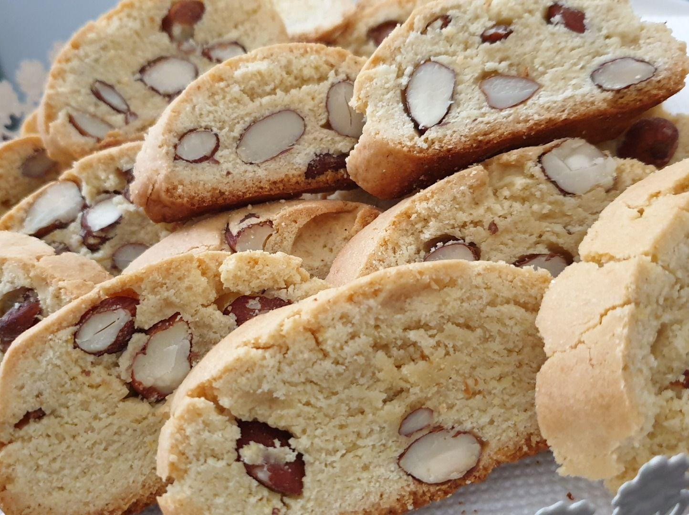

Cantucci

Let's make these amazing biscuits from tuscany
In Tuscany, cantucci di Prato are traditionally served at the end of a meal with a glass of Tuscan dessert wine, vin santo, for dipping. "But, being English, Trudie and Sting often eat them with tea," Chef Joe Sponzo says. Il Palagio's vin santo (which is Italian for "holy wine") is made with Trebbiano and Malvasia grapes from the estate's own organic vineyards, which are dried in rafters before their sweet juice is pressed and fermented.
Ingredients
- 3 cups all-purpose flour
- 1 cup granulated sugar, plus more for sprinkling
- 1 cup whole almonds
- 2 teaspoons baking powder
- 2 teaspoons anise seeds
- Finely grated zest of 1 lemon
- 1/4 teaspoon salt
- 3 large eggs
- 2 large egg yolks
- 2 teaspoons vin santo or other sweet wine
- 1 large egg white, beaten
Steps
- Preheat the oven to 350°. Line a baking sheet with parchment paper. In the bowl of a standing mixer fitted with a paddle, combine the flour with the 1 cup of granulated sugar, almonds, baking powder, anise seeds, lemon zest and salt. Add the whole eggs, egg yolks and vin santo and beat at low speed until a stiff, crumbly, slightly sticky dough forms.
- Turn the dough onto a lightly floured work surface and knead it 2 or 3 times, until it just comes together. Divide the dough into 3 equal pieces and form each one into a 12-by-1 1/2-inch log. Transfer the logs to the prepared baking sheet. Brush the tops of the logs with the egg white and sprinkle lightly with sugar. Bake the logs in the center of the oven for 25 minutes, or until they are lightly browned and slightly firm. Let the logs cool for 30 minutes on the baking sheet, then transfer them to a cutting board.
- Line 2 baking sheets with parchment paper. While the logs are still warm, cut them into 1/3-inch slices with a sharp serrated knife. Arrange the cantucci on the sheets, cut sides down, and bake, turning once, until golden, about 25 minutes.
- Enjoy!